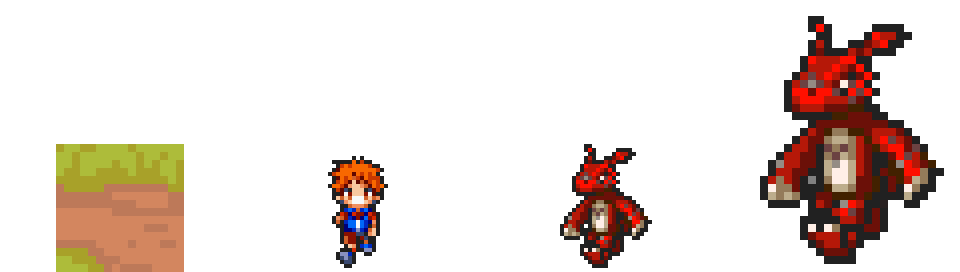
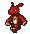
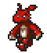
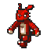
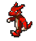

GS-003 — Guilmon, prova de escala nativa maior (64px) vs rip DS nativo (~31px)
Todas as imagens desta página usam o mesmo multiplicador de pixel (nearest-neighbor, image-rendering: pixelated) para cada grupo — não há reamostragem nem distorção de proporção: o que muda de tamanho na tela é exatamente o que muda de tamanho no jogo, na mesma razão. Tile = 32×32px (grid do mapa). Tamer = canvas 32×32px (corpo ~28px, `TAMER-0001`). Guilmon rip = 30×34px nativo do rip DS (`CREATURE-0003`). Guilmon 64 = 60×68px, gerado nesta prova (create_character v3 + reference, canvas definido pela própria referência enviada).
1. Prancha de proporção (estática, fator ×4)
Tile · Tamer · Guilmon atual (rip) · Guilmon 64 — base alinhada (pés no mesmo nível), gerada por pixelart_workbench scale --by 4 + join --as sheet.

2. Mesma referência, fator ×5, com rótulos

Tile de mapa
32×32px

Tamer (jogador)
canvas 32×32px, corpo ~28px

Guilmon atual (rip DS)
30×34px nativo

Guilmon 64 (esta prova)
60×68px
3. Idle e walk animados, S e SW — rip (atual) × 64px (esta prova)
GIFs nativos de cada lado, no fator ×5 (consistente com a seção 2) — a diferença de tamanho na tela é a diferença real de resolução nativa, não um efeito de CSS.

Idle S — rip atual
canvas 32×40px

Idle S — 64px
canvas 60×68px

Idle SW — rip atual
reaproveita W, sem ângulo SW real

Idle SW — 64px
ângulo SW real, gerado

Walk S — rip atual
canvas 32×40px

Walk S — 64px
canvas 60×68px

Walk SW — rip atual
reaproveita W, sem ângulo SW real

Walk SW — 64px
ângulo SW real, gerado
4. Leitura do diretor de arte
- Na prancha de proporção (seção 1/2), o Guilmon 64 fica visivelmente mais próximo da altura do Tamer do que o rip atual — o rip hoje lê como "menor que o jogador" de um jeito que não corresponde à intenção de design (Guilmon é descrito como do tamanho de um cão grande/pequeno jacaré, não um filhote minúsculo); o 64px aproxima essa leitura sem ainda igualar o Tamer (que também deve subir de escala, ver `ART_DIRECTION_V2.md` §1.2).
- O ganho de legibilidade é real, não só "maior": no 64px dá pra ler separadamente o focinho, os dois olhos, as garras das quatro patas e a faixa clara do peito — no rip 30×34 esses elementos colapsam em poucos pixels e dependem de o jogador já saber o que está vendo.
- A animação (idle e walk) preserva peso e identidade nas duas direções testadas — ver `README.md` desta pasta para a avaliação quadro a quadro.